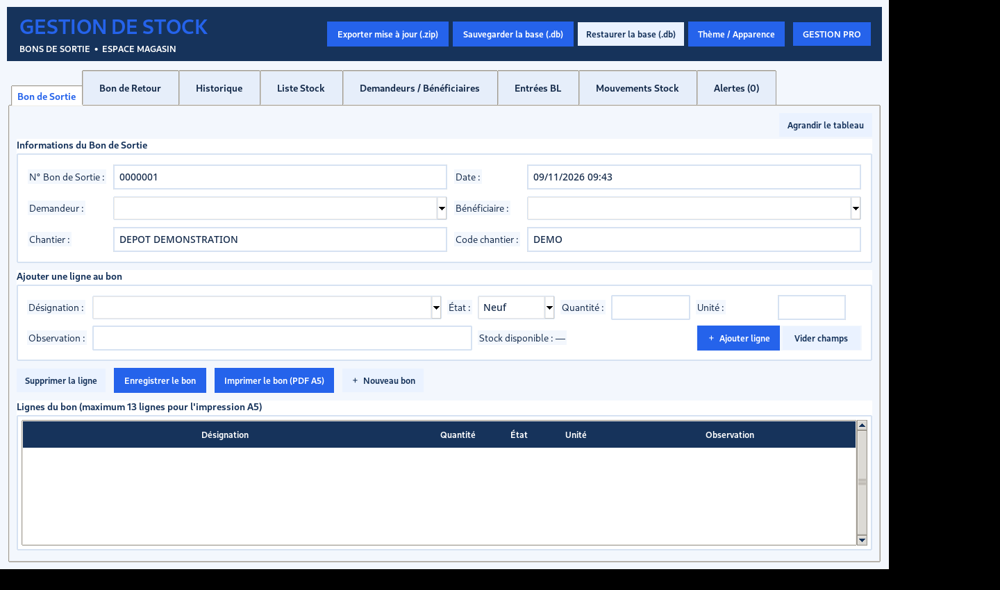
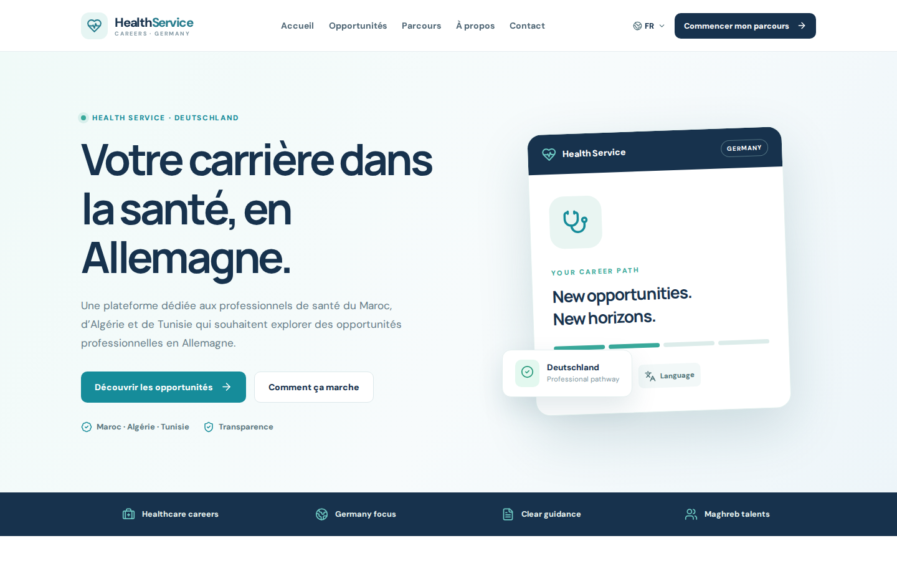
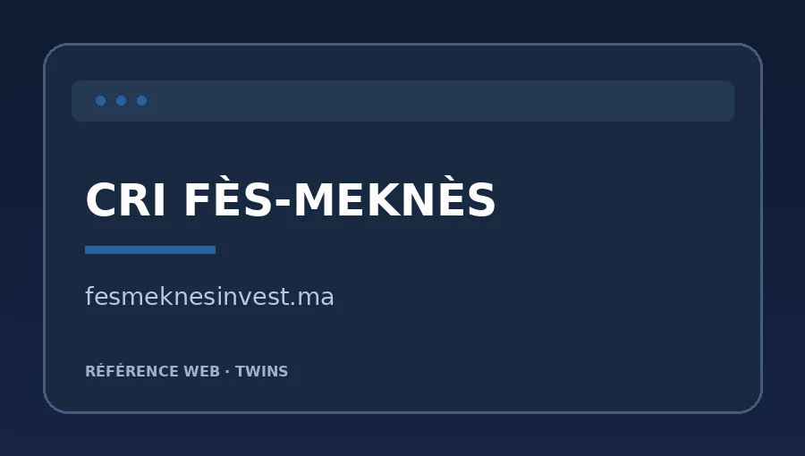
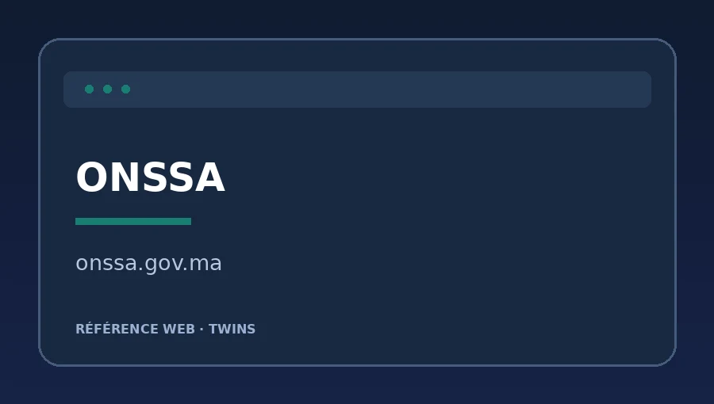
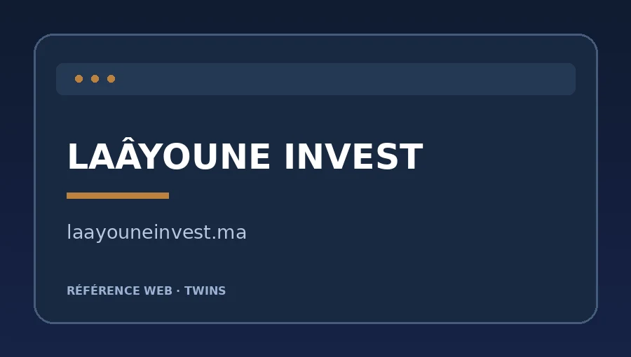
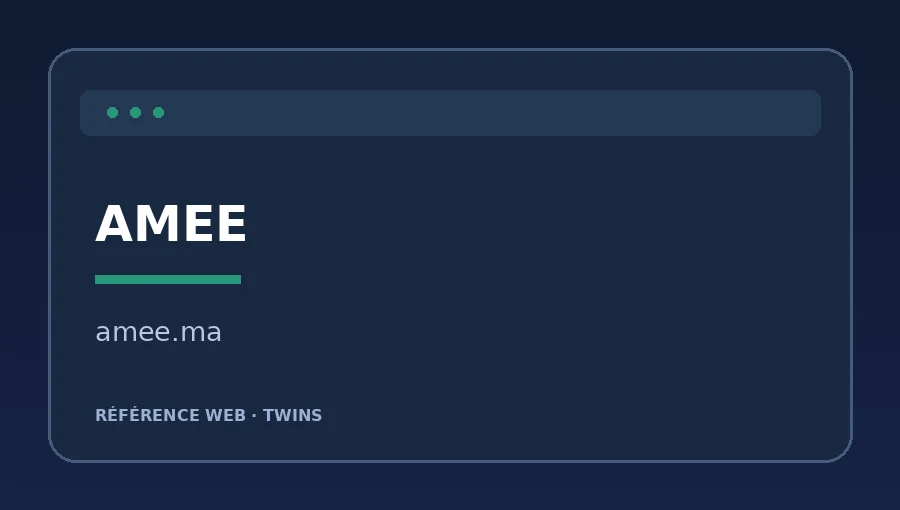
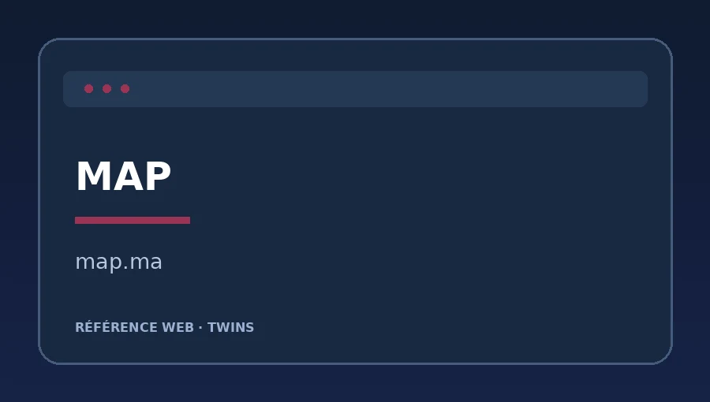

Sites web & plateformes
Développement de sites institutionnels, vitrines et sites WordPress ou Drupal, interfaces responsive et fonctionnalités spécifiques.
WordPressDrupalPHPHTML / CSSJavaScript
Sites web, applications, plateformes institutionnelles et outils métiers adaptés à vos besoins.
Discuter de votre projet ↗Des plateformes institutionnelles aux outils métiers sur mesure : conception, intégration, personnalisation et maintenance.
Développement de sites institutionnels, vitrines et sites WordPress ou Drupal, interfaces responsive et fonctionnalités spécifiques.
Création d’applications de bureau et d’outils internes adaptés aux processus de chaque entreprise : formulaires, bases de données, historiques et rapports.
Amélioration des performances et du SEO, corrections, sécurisation, hébergement, gestion des noms de domaine et suivi technique.
Une sélection de réalisations web et de solutions logicielles, développées en entreprise et en projet personnel.
Mes projets défilent automatiquement · survolez pour explorer à votre rythme

APPLICATION MÉTIERSolution de gestion de stock conçue pour le suivi des articles, des entrées et sorties, des bons, des mouvements et des alertes de réapprovisionnement.
 APPLICATION WEB
APPLICATION WEBUne interface moderne de gestion BTP : suivi des chantiers, des stocks, des bons, du personnel, des engins et des finances. Démonstration interactive avec données locales.

APPLICATION WEBPlateforme de recrutement dédiée aux professionnels de santé intéressés par l’Allemagne, avec espace candidats et administration. Les fonctions de collecte nécessitent Supabase.
Application de gestion commerciale avec tableau de bord, clients, produits, devis, factures et suivi des paiements. Démonstration V1.
Application web de gestion pour opticien, développée avec React. Un exemple de solution métier personnalisée, au-delà de la gestion de stock.
 SITE WEB
SITE WEB
CRI FÈS-MEKNÈSProjet institutionnel · TWINSLe Centre Régional d’Investissement Fès-Meknès accompagne les investisseurs et les entreprises : guichet unique, démarches administratives, opportunités d’investissement et promotion économique de la région.
Visiter le site ↗
ONSSAProjet institutionnel · TWINSL’Office National de Sécurité Sanitaire des Produits Alimentaires veille à la sécurité sanitaire des aliments, à la santé animale et végétale, aux contrôles, à la réglementation et aux autorisations sanitaires.
Visiter le site ↗ SITE WEB
SITE WEB
LAÂYOUNE INVESTProjet institutionnel · TWINSPortail du Centre Régional d’Investissement Laâyoune-Sakia El Hamra : accompagnement des porteurs de projets, opportunités d’investissement, informations territoriales et services aux entreprises.
Visiter le site ↗ SITE WEB
SITE WEB
AMEEProjet institutionnel · TWINSL’Agence Marocaine pour l’Efficacité Énergétique promeut les économies d’énergie à travers des programmes, audits, formations, conseils techniques et actions de sensibilisation.
Visiter le site ↗ SITE WEB
SITE WEB
MAPProjet institutionnel · TWINSL’Agence Maghreb Arabe Presse est l’agence nationale marocaine de presse. Elle diffuse l’actualité nationale et internationale sous forme de textes, photos, vidéos et contenus multimédias.
Visiter le site ↗Personnalisation de thèmes, intégration de fonctionnalités, hooks PHP, optimisation et maintenance de sites WordPress.
Missions freelance · 2025Les références institutionnelles présentées correspondent à des projets réalisés dans le cadre de mon activité professionnelle chez TWINS, et non à des contrats individuels directs.
Du site vitrine au logiciel métier, je vous accompagne dans la création d’outils utiles, évolutifs et faciles à utiliser.
Sites vitrines, plateformes WordPress et Drupal, intégration responsive, maintenance et optimisation.
Discuter de ce service ↗Logiciels sur mesure pour les stocks, les mouvements, les documents métier et les tableaux de bord.
Discuter de ce service ↗Formulaires, bons de sortie, inventaires, alertes et rapports pour simplifier les tâches répétitives.
Discuter de ce service ↗Structuration des flux, suivi des réceptions et sorties, traçabilité et outils adaptés aux équipes terrain.
Discuter de ce service ↗